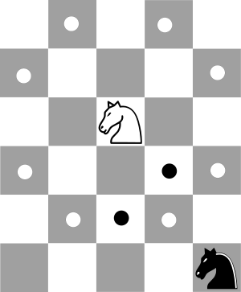
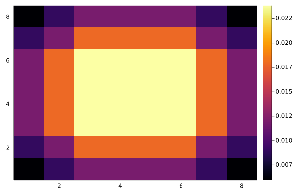

Konj na šahovnici
Konj naključno skače po šahovnici. Katera polja bolj pogosto obišče?
Kaj pa če po šahovnici skačeta 2 konja? Prej ali slej bo en konj pojedel drugega. Na katerih poljih se bo to najverjetneje zgodilo?

Možne poteze konja
Markovske verige
Problem modeliramo z markovskimi verigami. Prostor stanj markovske verige je v primeru enega konja polje na šahovnici, v primeru dveh konjev pa par šahovskih polj. Markovsko verigo predstavimo konjevim grafom, ki povezuje dve polji, če lahko konj skoči z enega na drugega. Če predpostavimo, da konj skoči na vsako dostopno polje z enako verjetnostjo, dobimo markovsko verigo. Verjetnosti za prehod med stanji predstavimo z matriko prehodnih verjetnosti:
\[P = [p_{kl}]_{k,l} = P(\text{iz stanja k preide v stanje l})\]
Za primer konja na šahovnici lahko stanje označimo s pari števil (i,j), ki označujejo polje na šahovnici, kjer je konj trenutno postavljen. V prehodni matriki smo predpostavili, da je stanje označeno z enim samim številom, zato moramo dvojni indeks (i,j) preslikati v zaporedna števila. To lahko storimo, tako da polja številčimo po stolpcih. Če je šahovsko polje velikosti $m\times n$, dobimo naslednjo preslikavo med indeksi:
\[\begin{matrix} (1,1)\to 1 & (1, 2)\to m+1 &\ldots & (1,m)\to 1+m(n-1)\\ (2,1)\to 2 & (2, 2)\to m+2 &\ldots & (2,m)\to 2+m(n-1)\\ \vdots & \vdots &\vdots &\vdots \\ (m,1)\to m & (m,2)\to 2m &\ldots & (m,n)\to mn \end{matrix}\]
in zaporedni indeks posameznega polja lahko izrazimo s formulo:
\[k = i + (j-1)*m\]
Poglejmo si polje velikosti 3 krat 3. Število stanj je 9 Polja so razvrščena v naslednjem vrstnem redu
\[(1,1), (2,1), (3, 1), (1,2), (2, 2), (3, 2), (1, 3), (2, 3), (3, 3)\]
Prehodna matrika je dimenzije $9\times 9$.
julia> using NumMat
julia> P = prehodna_matrika_konj(3, 3)
julia> Matrix(P)
9×9 Array{Float64,2}:
0.0 0.0 0.0 0.0 0.0 0.5 0.0 0.5 0.0
0.0 0.0 0.0 0.0 0.0 0.0 0.5 0.0 0.5
0.0 0.0 0.0 0.5 0.0 0.0 0.0 0.5 0.0
0.0 0.0 0.5 0.0 0.0 0.0 0.0 0.0 0.5
0.0 0.0 0.0 0.0 0.0 0.0 0.0 0.0 0.0
0.5 0.0 0.0 0.0 0.0 0.0 0.5 0.0 0.0
0.0 0.5 0.0 0.0 0.0 0.5 0.0 0.0 0.0
0.5 0.0 0.5 0.0 0.0 0.0 0.0 0.0 0.0
0.0 0.5 0.0 0.5 0.0 0.0 0.0 0.0 0.0Iz vsakega polja razen iz sredine lahko konj skoči le v dve polji, zato so prehodne verjetnosti enake 0.5. Kot primer vzemimo $p_{1,6} = 0.5$, kar pomeni, da iz polja $(1,1)$ konj z verjetnostjo $0.5$ skoči na polje $(3, 2)$. V tem primeru je prehodna matrika simetrična, a to nikakor ni praivlo.
Limitna porazdelitev Markovske verige
Limitna porazdelitev Markovske verige je lastni vektor transponirane matrike prehodnih verjetnosti $P$ za lastno vrednost 1.
\[P\vec{p}=\vec{p}\]
Da se pokazati, da je 1 največja lastna vrednost prehodne matrike za markovsko verigo, zato lahko za izračun lastnega vektorja uporabimo potenčno metodo.
S potenčno metodo zgradimo zaporedje približkov, tako da prejšnji približek $x^{(n)}$ pomnožimo z matriko $A$ in dobljeni rezultat normiramo:
\[x^{(n+1)} = \frac{Ax^{(n)}}{\|Ax^{(n)}\|}\]
Običajno uporabimo maksimalno normo, saj jo je mogoče najhitreje izračunati. Namesto norme lahko uporabimo tudi katerokoli neničelno komponento približka. Približek za lastno vrednost $\lambda$ lahko izračunamo z Rayleighovim kvocientom
\[\lambda=\frac{x^TAx}{x^Tx} = x^TAx\]
Če smo uporabili za normiranje uporabili $k$-to komponento vektorja, pa lahko približek za lastno vrednost izračunamo kar kot kvocient $(Ax)_k/x_k$.
Premik
Če poskusimo potenčno metodo za primer konja na šahovnici, ugotovimo, da metoda ne konvergira.
julia> using NumMat
julia> using Random; Random.seed(321);
julia> P = prehodna_matrika_konj(8, 8);
julia> λ, v, it = potencna(P', rand(64); maxit=10000, tol=1e-2)
ERROR: Potenčna metoda ne konvergiraRazlog se skriva v lastnosti konjevega grafa, ki je dvodelen. Zato ima prehodna matrika tudi lastno vrednost -1. Približki potenčne metode tako skačejo med dvema vektorjema
\[\alpha v_1 + \beta v_2 \text{ in } \alpha v_1 - \beta v_2,\]
kjer je $v_1$ lastni vektor za $1$ in $v_2$ lastni vektro za $-1$.
Nastali problem lahko rešimo s premikom
Če matriki $A$ prištejemo večkratnik identične matrike $\sigma I$, se bodo lastne vrednosti premaknile za $\sigma$, lastni vektorji pa bodo ostali enaki. Namestno, da iščemo lastne vektorje matrike $A$, je včasih bolje poiskati lastne vektorje premaknjene matrike
\[A+\sigma I\]
Še posebej je to uporabno pri inverzni iteraciji, kjer s lastni vektor za poljubno lastno vrednost.
Če prehodno matriko premaknemo za $I$, se bodo lastne vrednosti premaknile tako, da se bo lastna vrednost 1 premaknila v 2, lastna vrednost -1 pa v 0. Potenčna metoda bo potem konvergirala k invariantni porazdelitvi.
using NumMat
import LinearAlgebra.I
import Random.seed!;
seed!(321);
P = prehodna_matrika_konj(8, 8);
λ, v, it = potencna(P'+I, rand(64))
using Plots
heatmap(reshape(v/sum(v), 8, 8))
savefig("invariantna_porazdelitev_konj.png")
Invariantna porazdelitev za slučajni sprehod konja na standardni šahovnici
Naloga
Določi invariantno porazdelitev za dva konja. Na katerem polju bo en konj najverjetneje pojedel drugega?
Povprečni čas do konca igre
Recimo, da na šahovnici naključno skačeta dva konja. Igra se konča, ko en konj poje drugega (pride na isto polje kot drugi). Zanima nas, koliko je povprečni čas, da se to zgodi. Pomagamo si lahko z matriko prehodnih verjetnosti. Matriko prehodnih verjetnosti lahko zapišemo v kanonični bločni obliki
\[P = \begin{bmatrix}Q & R\cr 0& I\end{bmatrix}\]
kjer sta $Q$ in $R$ neničelni matriki, $I$ je identiteta in $0$ ničelna matrika ustreznih dimenzij.
\[(I-Q)^{-1}\cdot \mathbf{1},\]
kjer je $\mathbf{1}=[1, 1,\ldots 1]^T$ vektor samih enic.
Koda
NumMat.MCKonjBase.:*NumMat.invariantna_porazdelitevNumMat.potencnaNumMat.prehodna_matrika_konjNumMat.skoki
NumMat.potencna — Methodλ, v, it = potencna(A, x0; maxit=100, tol=1e-5)Poišči po absolutni vrednosti največjo lastno vrednost in pripadajoči lastni vektor za matriko A s potenčno metodo. Če potenčna metoda ne konvergira, javi napako tipa ErrorException.
Base.:* — Method*(MCKonj(), p)Izračuna produkt porazdelitve p po šahovskih poljih s transponirano prehodno matriko za slučajni sprehod konja na šahovnici.
NumMat.invariantna_porazdelitev — Methodinvariantna_porazdelitev(p0; maxit=100, tol=1e-5)Izračunaj invariantno porazdelitev markovske verige, ki predstavlja slučajni sprehod konja po šahovnici. Argument p0 je začetna porazdelitev po poljih na šahovnici.
Primer
p0 = rand(8,8)
p = invariantna_porazdelitev(p0)NumMat.prehodna_matrika_konj — Methodprehodna_matrika_konj(n, m)Vrne prehodno matriko za slučajni sprehod konja na šahovnici dimenzije n krat m.
NumMat.skoki — Methodskoki(i, j, m, n)Vrne vse možne skoke konja iz polja (i,j) na m x n šahovnici.
NumMat.MCKonj — TypeMarkovska veriga za konja na šahovnici